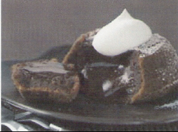
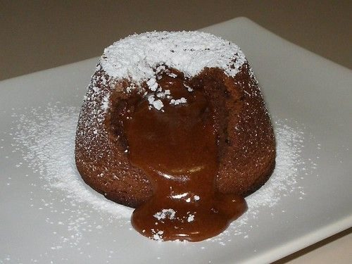

Molten Chocolate Cakes


Photo: barisione (CC BY 2.0)
Individual semi-sweet chocolate cakes baked in custard cups until the sides are firm but the centers stay soft and molten, then inverted and served with whipped topping.
Directions
- Preheat oven to 425 degrees. Butter 4 (3/4 cup) custard dishes. Place on baking sheet.
- Melt chocolate and butter over a double boiler or microwave Stir with wire whisk until all is melted. Stir in sugar until well blended. Whisk in eggs and egg yolks. Stir in flour. Divide batter evenly to all custard cups.
- Bake 13 to 14 minutes or until sides are firm but centers are soft. Let stand 1 minute. Carefully run knife around cakes to loosen. Invert cakes to dessert dishes. Serve with whipped cream topping.
- Batter can be made a day ahead. Pour into prepared custard cups. Cover with plastic wrap. Refrigerate. When ready. Bake as directed.
- Preheat the oven to 425 degrees. Butter 4 (3/4-cup) custard dishes and place them on a baking sheet.
- Melt the chocolate and butter over a double boiler or in the microwave. Stir with a wire whisk until all is melted.
- Stir in the powdered sugar until well blended.
- Whisk in the eggs and egg yolks, then stir in the flour.
- Divide the batter evenly among all the custard cups.
- Bake 13 to 14 minutes, or until the sides are firm but the centers are soft.
- Let stand 1 minute. Carefully run a knife around the cakes to loosen them, then invert the cakes onto dessert dishes.
- Serve with the thawed Cool Whip whipped topping.
- Make-ahead: the batter can be made a day ahead. Pour into the prepared custard cups, cover with plastic wrap, and refrigerate. When ready, bake as directed.
Goes well with
https://lizotte.cool/recipe/molten-chocolate-cakes.html